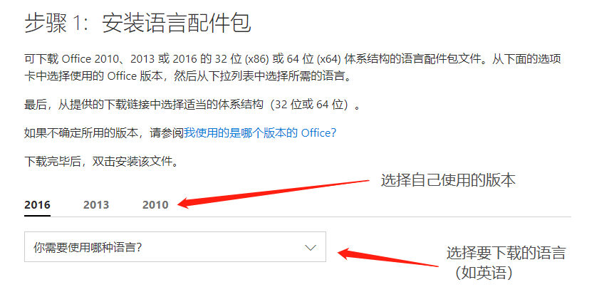

作者：Zhenghao Wu
2018年3月11日
因为学校为机房（T29-201/T29-202）安装的是 Office 2010 版本，而且现在大多电脑出厂预装的是 Office 2016 版本，所以本教程中的方法只适用于 Office 2010 及以后版本（2010, 2013, 2016）。
步骤一 · 下载相应语言包
访问微软 Office 支持网站中关于“Office 语言配件包”的页面，根据自己正在使用的 Office 版本和需要的语言选择并下载语言配件包。
步骤二 · 安装语言包
下载语言包到本地后，双击文件进行安装，安装过程一般不需要进行干预，等待安装完成即可。
步骤三 · 配置 Office 语言
- 打开任意 Office 程序，然后单击 “文件”>“选项”>“语言”。
- 在 “选择编辑语言” 下，确保将要使用的语言添加到此列表中。
- 在 “选择用户界面和帮助语言” 下，可以更改所有 Office 应用程序的默认界面和帮助语言。
- 只需将你需要设置的目标语言选中，并点击”设为默认值“即可。
- 重启 Office 程序以使更改生效。
至此，你的 Office 的显示语言就已经更改。